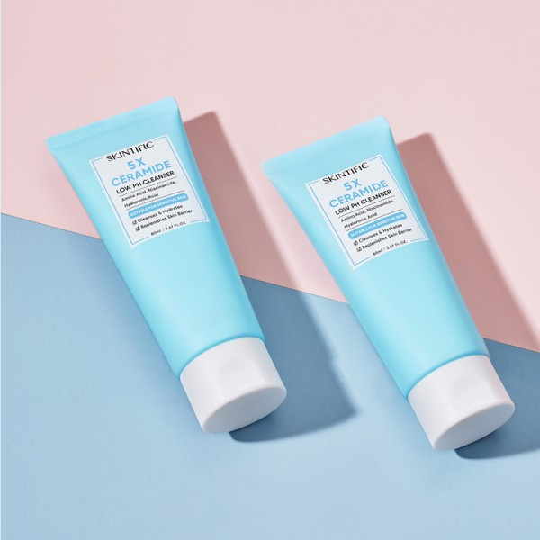
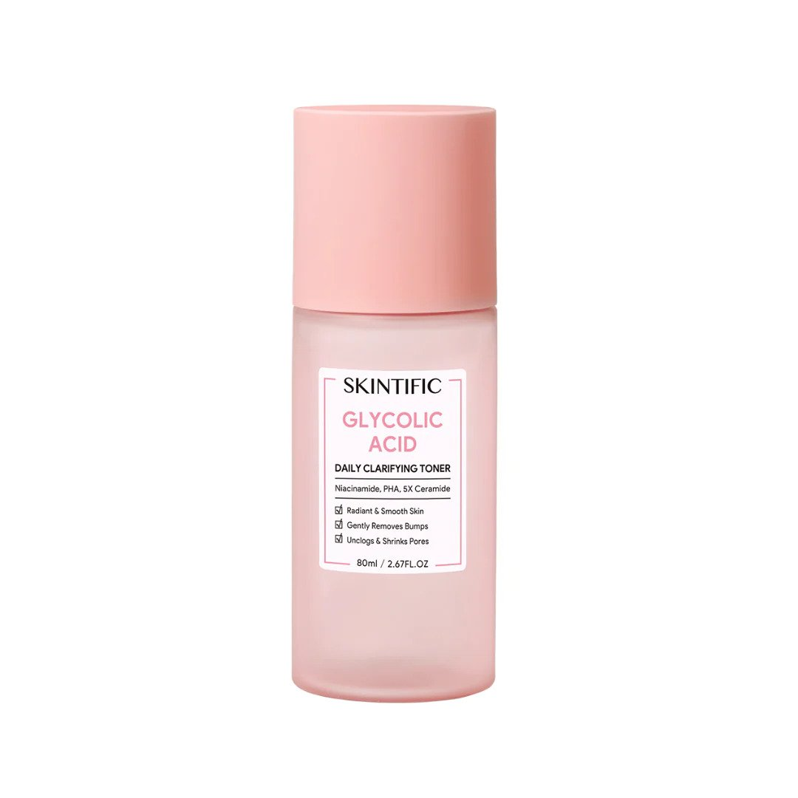
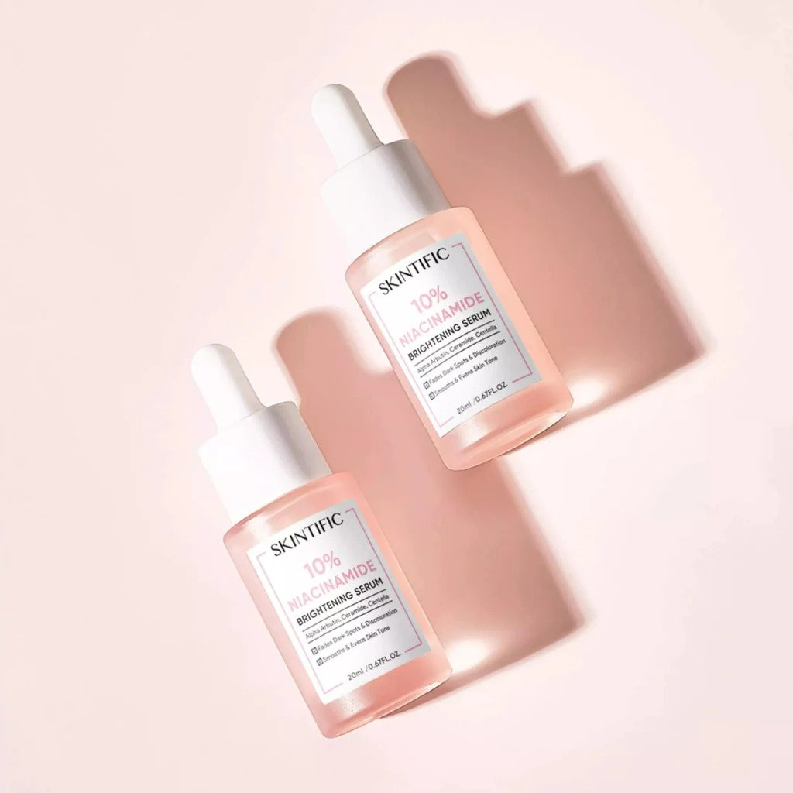
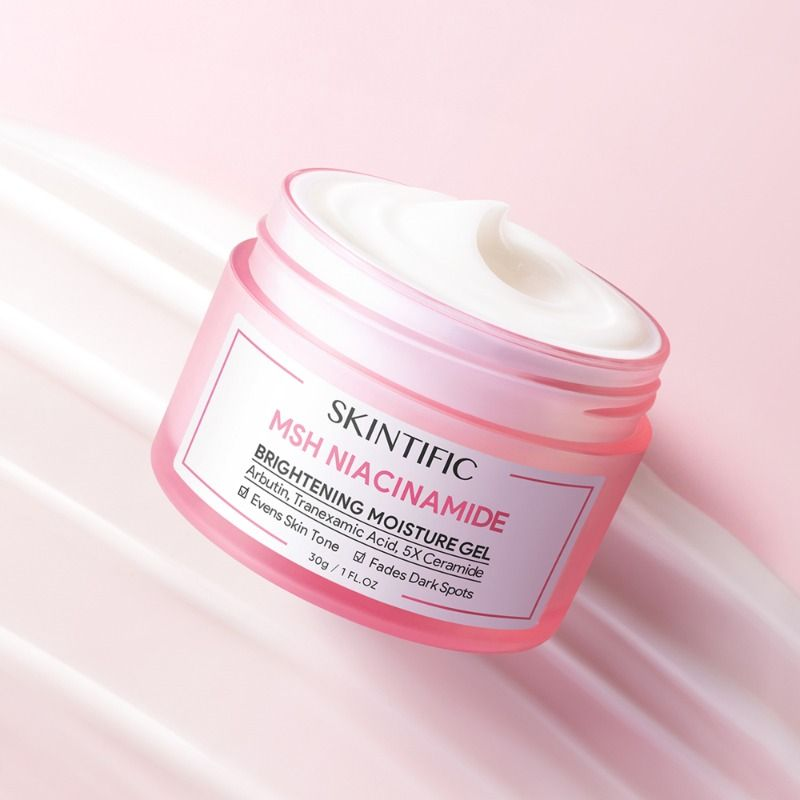
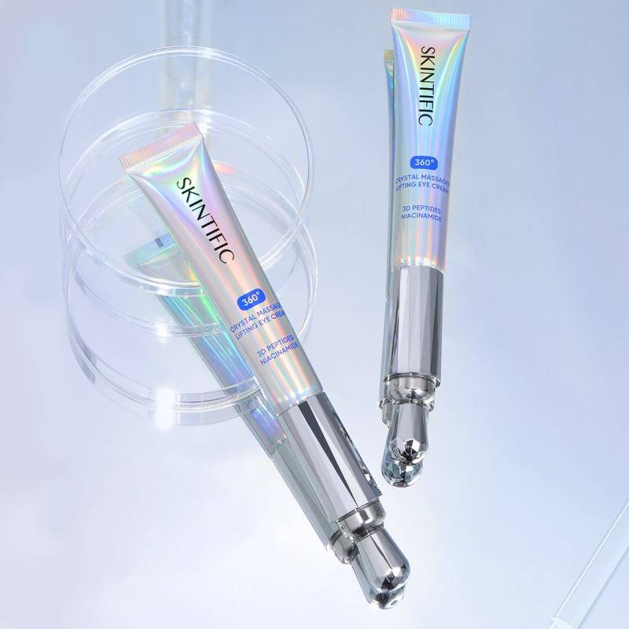

Step 1: Cleanser
A clean face is your starting point for a healthy, glowing complexion.
How to use it: Apply cleanser with warm water and rinse thoroughly with lukewarm water.

Step 2: Toner
Whether you need to hydrate dry skin, combat oil or soothe sensitive skin, the right toner makes all the difference.
How to use it: Apply your toner to a cotton pad, then sweep the pad outwards from the center of your face. Or you might prefer a gentle mist formula that goes on with a quick spritz. Either way, allow the toner to dry before moving on to the next step.

Step 3: Serum
Whether water based or oil based, serums are easily absorbed by the skin and a little goes a long way.They're typically packaged in bottles with a dropper or pump.
How to use it: How to use it: Gently pat it into your skin, starting at the center of your face and moving outwards.

Step 4: Moisturizer
Moisturizing is vital to keeping skin healthy and helping aging skin appear more youthful.
How to use it: Gently massage your moisturizer into slightly damp skin. A pea-sized amount is generally enough for your entire face.

Step 5: Eye Cream
The sensitive skin around your eyes needs special attention.
How to use it: Apply your eye cream in very small dots near the inner corner of your eye and smooth it outwards. Follow the orbital bones that surround your eye, including the area just under your eyebrow, gently patting it into your skin with your ring finger.

Step 6: Sunscreen
Sunscreen is essential all year round, even on cloudy days.
How to use it: Apply at least 30 minutes before going outside.